Manual técnico: paso a paso de la implementación, con capturas (imagen, red, señalización, chat, videollamada, archivos, errores y pruebas).
Manual de usuario: cómo iniciar, conectarse, chatear, llamar, enviar y abrir archivos, y qué hacer ante errores.
Explicación del proyecto: diagramas UML actualizados, flujos de señalización, medios y datos, decisiones, cambios frente a la arquitectura inicial y problemas resueltos.
Sobre las capturas: las pantallas de la interfaz se tomaron con Chrome en modo sin ventana y con cámara y micrófono simulados (--use-fake-device-for-media-stream), por eso el video muestra el patrón de prueba de Chrome en lugar de una persona. Las salidas de terminal son reales y se copiaron tal cual.
Parte 1. Manual técnico
1.1 Requisitos y estructura
Docker Desktop con Docker Compose (probado con Docker 29.9 y Compose 5.6, Windows 11 con WSL 2). En Linux, Docker Engine con el plugin Compose.
Navegador Chrome o Edge en el anfitrión. La cámara y el micrófono se usan desde el navegador, no desde los contenedores.
Node.js 22 o más reciente en el anfitrión, solo para las pruebas automáticas.
docker-compose.yml dos servicios (nodo-a, nodo-b) en la red mensajero-red
servidor/
Dockerfile imagen node:22-alpine, usuario sin privilegios y healthcheck
src/servidor.js HTTP + WebSocket (/ws clientes, /nodo enlace) y enrutamiento
src/enlace.js conexión saliente al otro nodo, con reintento cada 2 s
src/directorio.js usuarios locales y remotos
src/registro.js formato de los logs
src/cliente-consola.js cliente de consola (primer avance)
src/prueba-avance.js prueba automática entre nodos
public/index.html interfaz web
public/app.js conexión con el nodo, usuarios en línea y chat
public/webrtc.js conexión entre navegadores (perfect negotiation)
public/llamada.js videollamada
public/archivos.js archivos por RTCDataChannel
pruebas/prueba-navegador.mjs prueba de extremo a extremo en Chrome sin ventana
docs/ informe, diagramas UML y este documento
BITACORA.md una entrada por sesión de trabajo
1.2 Paso 1: construcción de la imagen
Los dos nodos usan la misma imagen; solo cambian sus variables de entorno. El Dockerfile parte de node:22-alpine, copia primero package.json y package-lock.json para aprovechar la caché de capas, instala la única dependencia (ws) con npm ci, copia el código y la interfaz, cambia al usuario sin privilegios node y define un HEALTHCHECK que consulta /salud cada 10 segundos.
Comando (PowerShell, entrando a la carpeta con la C mayúscula): docker compose build
Salida real: los seis pasos del Dockerfile y la imagen resultante
1.3 Paso 2: red y arranque de los dos nodos
docker-compose.yml declara la red mensajero-red (tipo bridge definida por el usuario) y los servicios nodo-a y nodo-b. Cada servicio recibe NODO_NOMBRE y PAR_URL (la dirección del otro nodo por nombre, por ejemplo ws://nodo-b:8080/nodo) y publica su puerto 8080 en el anfitrión: 8081 para el nodo A y 8082 para el nodo B.
Comandos: docker compose up -d y luego docker compose ps
Los dos contenedores están healthy. Así quedó la red y así se resuelven los nombres con el DNS interno de Docker (127.0.0.11):
Cada nodo atiende en el puerto 8080: HTTP (página, /salud, /usuarios), WebSocket /ws para los navegadores y WebSocket /nodo para el otro nodo. Al arrancar, cada nodo abre una conexión saliente hacia su par (enlace.js) y le envía la lista de sus usuarios (mensaje presencia). Cuando un mensaje dirigido (mensaje, llamada, oferta, respuesta, candidato, colgar) va para un usuario del otro nodo, se reenvía envuelto en {"tipo":"reenvio"}. Lo que llega del par solo se entrega localmente; nunca se reenvía de vuelta, así que no hay ciclos.
Logs de los dos nodos (docker compose logs): registro, reenvío y entrega del chat y de la señalización de la llamada
1.5 Paso 4: interfaz web y chat
La interfaz es HTML, CSS y JavaScript sin frameworks, servida por el propio nodo. app.js abre el WebSocket con su nodo, registra al usuario y muestra la lista de usuarios en línea con el nodo de cada uno. El chat viaja por la señalización: así queda en los logs y funciona aunque no haya llamada. Los textos se insertan con textContent, de modo que nunca se interpretan como HTML.
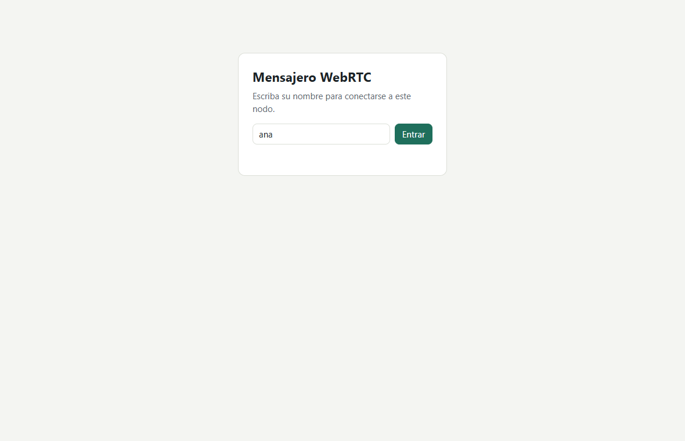
Figura 1. Pantalla de ingreso del nodo A (http://localhost:8081).
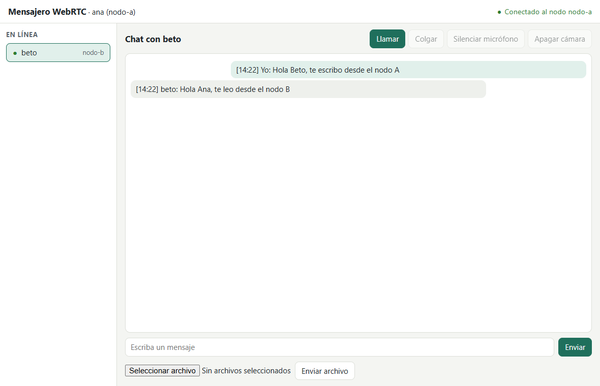
Figura 2. Chat entre ana (nodo A) y beto (nodo B); a la izquierda, los usuarios en línea con su nodo y, arriba a la derecha, el indicador de conexión.
1.6 Paso 5: videollamada
llamada.js pide cámara y micrófono con getUserMedia, avisa al otro con {"tipo":"llamada"} y agrega las pistas a la conexión con addTrack. webrtc.js mantiene un RTCPeerConnection por usuario y aplica el patrón perfect negotiation del W3C: cada cambio dispara negotiationneeded, se crea una oferta con setLocalDescription() y se envía por el nodo. Si los dos lados ofrecen a la vez, el lado «cortés» cede. Los mensajes de señalización de cada usuario se procesan en orden, con una cola.
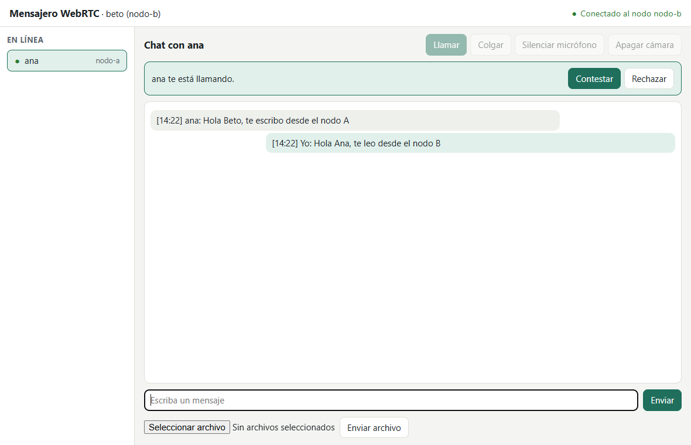
Figura 3. beto recibe la llamada de ana, con los botones Contestar y Rechazar.
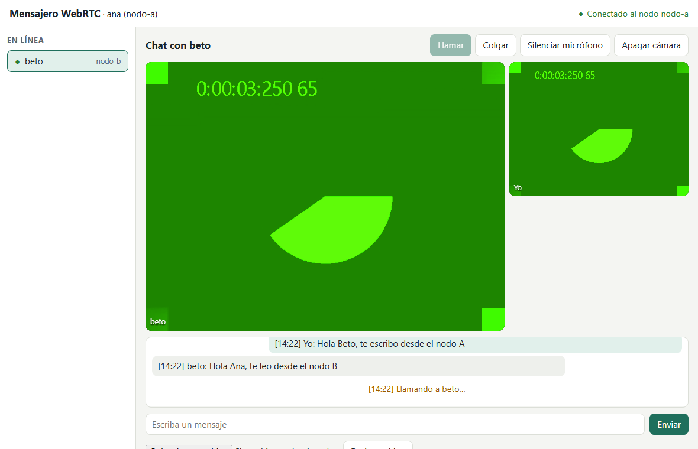
Figura 4. Videollamada en curso: video remoto grande y video local pequeño (cámara simulada).
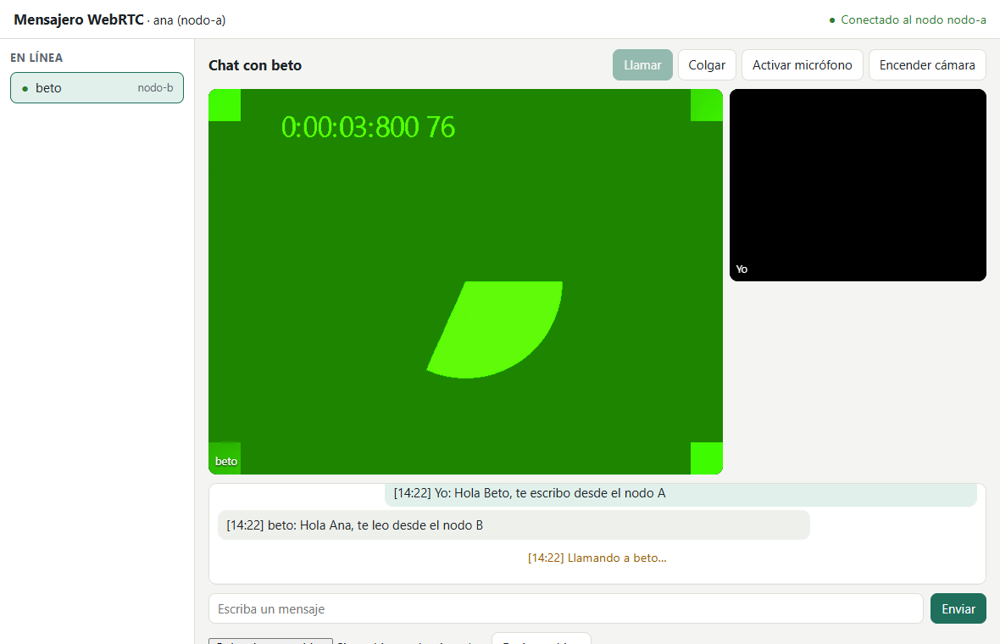
Figura 5. Micrófono silenciado y cámara apagada durante la llamada: los botones cambian a «Activar micrófono» y «Encender cámara».
Silenciar y apagar la cámara solo cambian track.enabled, sin cortar la llamada. Al colgar se detienen la cámara y el micrófono y se deja de enviar con replaceTrack(null), que no requiere renegociar. En la llamada siguiente se reutilizan los mismos canales de medios con replaceTrack(pistaNueva).
1.7 Paso 6: envío de archivos
Los archivos viajan directo entre navegadores por el canal de datos archivos (confiable y ordenado), que se crea junto con la conexión. El protocolo es: un mensaje de inicio con nombre, tamaño, tipo y huella SHA-256, luego fragmentos binarios de 16 KiB y por último fin. Si hay más de 1 MiB sin enviar (bufferedAmount), el emisor pausa hasta bufferedamountlow. El receptor une los fragmentos, recalcula el SHA-256 y responde recibido con el resultado.
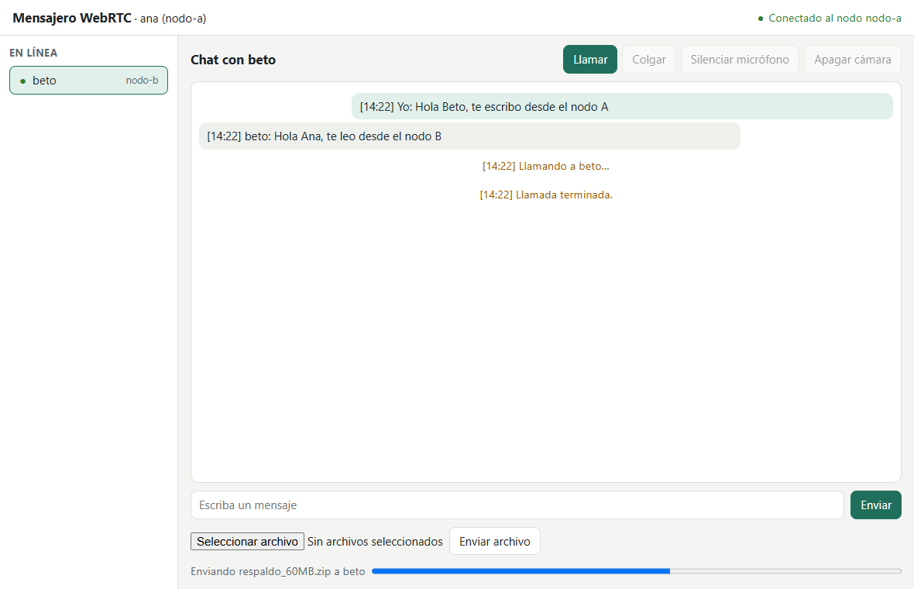
Figura 6. Envío de un archivo de 60 MB con barra de progreso.
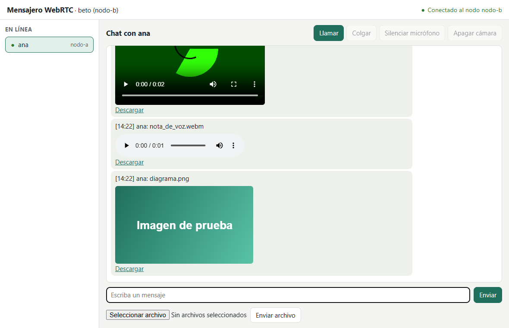
Figura 7. Receptor: el video, la nota de voz y la imagen se reproducen dentro del chat, y cada uno tiene su enlace «Descargar».
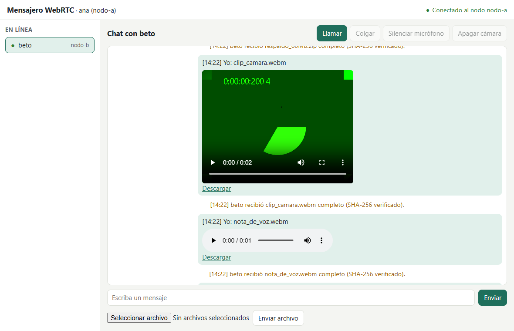
Figura 8. Emisor: confirmación de que el otro recibió cada archivo completo, con el SHA-256 verificado.
1.8 Paso 7: manejo de errores
Situación
Qué hace el sistema
Permiso de cámara negado
Aviso «Permiso de cámara o micrófono denegado…» y no se abre la llamada (figura 10). También se distinguen la cámara inexistente, la cámara ocupada por otra aplicación y la página abierta sin HTTPS ni localhost.
El otro extremo se desconecta
El nodo actualiza la presencia: se cierra la conexión con ese usuario, se corta la llamada si la había y el chat muestra «… se desconectó» (figura 9).
Archivo interrumpido
El emisor ve «No se pudo enviar …: se cerró el canal» y el receptor ve «Archivo … interrumpido». Si el archivo llega pero no coincide el tamaño o el SHA-256, se marca como dañado.
Se cae el nodo
La página muestra «Sin conexión con el nodo. Reintentando…» y se reconecta sola cada 2 s. El otro nodo detecta la caída y reintenta el enlace.
La conexión entre navegadores falla
Aviso y reinicio de ICE (restartIce).
Nombre en uso o destinatario inexistente
El nodo responde {"tipo":"error"} y la interfaz lo muestra.
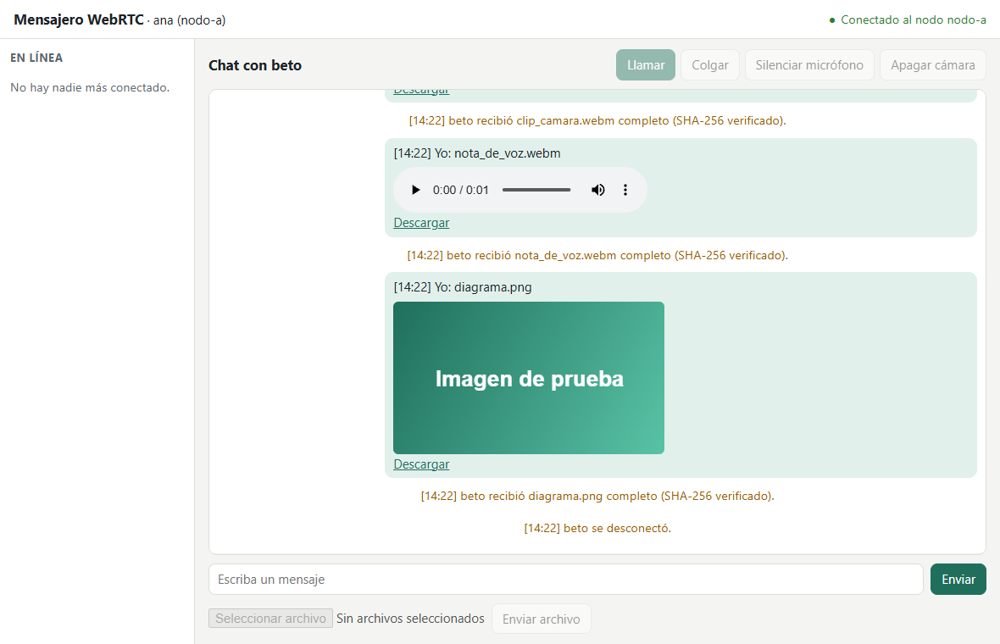
Figura 9. beto cerró su página: ana ve el aviso en el chat y beto desaparece de la lista.
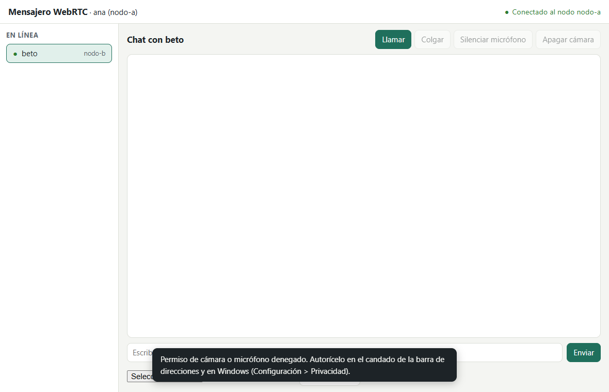
Figura 10. Permiso de cámara negado: aviso en la parte inferior; la llamada no se inicia.
1.9 Paso 8: pruebas automáticas
Además de la prueba del primer avance, pruebas/prueba-navegador.mjs abre un Chrome sin ventana con perfil temporal y cámara simulada, lo controla por el protocolo de depuración de Chrome y recorre el sistema completo entre los dos nodos.
Comandos: node pruebas/prueba-navegador.mjs todo y node pruebas/prueba-navegador.mjs errores
Parte 2. Manual de usuario
2.1 Iniciar la aplicación
Abra Docker Desktop y espere a que diga Engine running.
Abra PowerShell en la carpeta del proyecto (con la C mayúscula en la ruta) y ejecute: docker compose up --build -d
Compruebe con docker compose ps que los dos nodos dicen healthy.
Abra en el navegador http://localhost:8081 (nodo A) y, en otra ventana o perfil, http://localhost:8082 (nodo B). Use localhost: si abre la página por la IP del equipo, el navegador bloquea la cámara.
2.2 Conectarse
Escriba un nombre (de 1 a 20 letras, números, - o _) y pulse Entrar. Arriba aparece su nombre con el nodo y, a la derecha, el indicador «Conectado al nodo …». En la columna En línea aparecen los demás usuarios con el nodo al que están conectados.
2.3 Chatear
Pulse el nombre de la otra persona en la lista. Escriba en la caja de abajo y pulse Enviar o Enter. Sus mensajes aparecen a la derecha y los recibidos a la izquierda. Si le escriben desde otro chat, aparece un aviso «Nuevo mensaje de …».
2.4 Hacer una videollamada
Con el chat abierto, pulse Llamar y acepte el permiso de cámara y micrófono.
La otra persona ve «… te está llamando» y pulsa Contestar (o Rechazar).
Durante la llamada puede usar Silenciar micrófono y Apagar cámara; al pulsarlos de nuevo se reactivan.
Colgar termina la llamada para los dos y apaga la cámara.
2.5 Enviar y abrir archivos
Con el chat abierto, pulse Seleccionar archivo, elija cualquier archivo (también de más de 20 MB) y pulse Enviar archivo.
La barra muestra el avance. No es necesario estar en llamada.
El receptor ve el archivo en el chat. Las imágenes se ven y los videos y audios se reproducen ahí mismo. Todos tienen el enlace Descargar.
El emisor recibe la confirmación «… recibió … completo (SHA-256 verificado)».
2.6 Errores comunes y qué hacer
Mensaje o problema
Qué hacer
«Permiso de cámara o micrófono denegado»
Pulse el candado de la barra de direcciones y permita cámara y micrófono. En Windows: Configuración, Privacidad y seguridad, Cámara y Micrófono, y active el acceso para el navegador.
«La cámara o el micrófono están siendo usados por otra aplicación»
Cierre la otra aplicación (Teams, Meet, Zoom) o la otra pestaña que usa la cámara.
«La cámara solo funciona en HTTPS o en localhost»
Abra la página con http://localhost:8081 o :8082.
«El nombre … ya está en uso»
Elija otro nombre: ya hay alguien conectado con ese nombre en alguno de los dos nodos.
«Sin conexión con el nodo. Reintentando…»
El nodo está apagado o reiniciándose. Revise docker compose ps; la página se reconecta sola.
«No se pudo enviar …: se cerró el canal»
La otra persona se desconectó durante el envío. Vuelva a enviarlo cuando esté en línea.
«additional privileges requested … Dockerfile» al construir
Entre a la carpeta con la C mayúscula (Set-Location "C:\Users\...") y repita el comando.
Puertos 8081 u 8082 ocupados
Cambie el lado izquierdo de ports en docker-compose.yml, por ejemplo "9081:8080".
Parte 3. Explicación del proyecto
3.1 Arquitectura
Son dos nodos idénticos (contenedores Docker) en una red bridge propia. Cada usuario se conecta a su nodo, y los nodos se reenvían la señalización entre sí por un enlace WebSocket que se abre por nombre. Los medios y los archivos van directo de navegador a navegador con WebRTC, sin pasar por los nodos.
Figura 11. Diagrama de componentes con los archivos reales de la implementación.Figura 12. Diagrama de despliegue: nodos, red, navegadores y anfitrión, con protocolo y puerto.
3.2 Flujo de señalización, medios y datos
Flujo
Camino
Protocolo
Señalización y chat
navegador → su nodo → (enlace entre nodos) → nodo del otro → navegador
WebSocket sobre TCP, mensajes JSON
Audio y video
navegador ↔ navegador
SRTP sobre UDP, cifrado con claves de DTLS; conectividad con ICE
Archivos
navegador ↔ navegador
RTCDataChannel: SCTP sobre DTLS sobre UDP
Figura 13. Secuencia: un mensaje pasa de nodo-a a nodo-b.Figura 14. Secuencia del inicio de una videollamada, tal como quedó implementada.
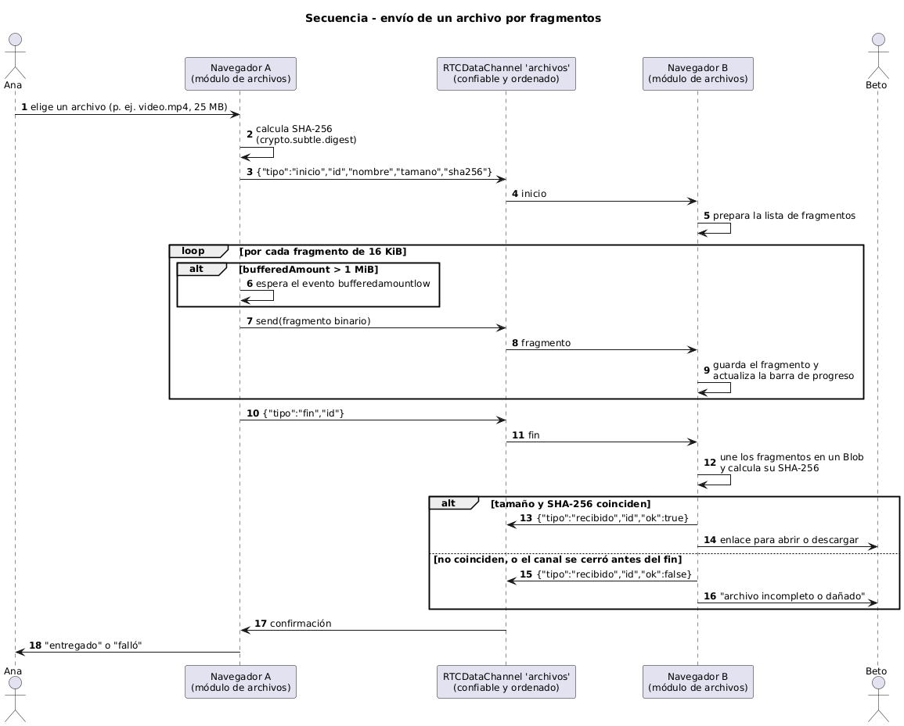
Figura 15. Secuencia del envío de un archivo por fragmentos.Figura 16. Estados de la conexión entre pares y reacción de la interfaz.
3.3 Decisiones tomadas
Decisión
Motivo
Docker + Compose en vez de máquinas virtuales
Un comando levanta todo, consume poca memoria y la red y los nombres se declaran en un archivo.
Red bridge definida por el usuario
Da DNS interno: los nodos se encuentran por nombre, sin IP en el código.
Node.js + ws; WebSocket con JSON propio
Un solo lenguaje en servidor y navegador; el protocolo se prueba desde la consola. Socket.IO no se descartó por mala calidad, sino porque usa su propio protocolo.
Enlace simétrico entre nodos
Cada nodo abre una conexión saliente para enviar y recibe la del otro: no importa cuál arranque primero.
Chat por el nodo; medios y archivos P2P
El texto es poco y queda en los logs; lo pesado no carga el servidor y va cifrado de extremo a extremo.
Interfaz sin frameworks, dividida en cuatro archivos
Sin paso de compilación; cada archivo tiene una responsabilidad que se puede explicar por separado.
Perfect negotiation + cola de señalización
Resuelve los choques de ofertas y el orden de los mensajes.
replaceTrack al colgar
Deja de enviar sin renegociar; evita el ciclo de renegociaciones que provocaba removeTrack.
Fragmentos de 16 KiB, umbral de 1 MiB y SHA-256
Tamaño seguro entre navegadores, memoria controlada y verificación de integridad del archivo completo.
3.4 Cambios frente a la arquitectura inicial
Nuevo mensaje llamada. La arquitectura inicial solo tenía oferta, respuesta, candidato y colgar. Hizo falta un aviso previo para mostrar «te está llamando» con Contestar y Rechazar.
Orden de la llamada. La oferta de quien llama sale de inmediato, y quien contesta agrega sus pistas al pulsar Contestar, con una segunda negociación. El diagrama de secuencia (figura 14) se actualizó.
El canal de datos nace con la conexión, no cuando se envía el primer archivo.
Al colgar, replaceTrack(null) en lugar de quitar las pistas.
HTTPS con Caddy no se implementó. Como los dos navegadores corren en el mismo equipo, http://localhost ya es un contexto seguro y la cámara funciona. Caddy solo haría falta para entrar desde otro equipo.
TURN no se configuró. Basta con los candidatos host en el mismo equipo y queda un STUN público para redes distintas. No se probó entre equipos en redes distintas.
3.5 Problemas resueltos
Problema
Causa
Solución
El nodo que arranca primero no encuentra al otro
El otro todavía no escucha (ECONNREFUSED).
Reintento cada 2 s; el log avisa solo la primera falla.
docker compose build falla en Windows («additional privileges requested»)
Compose 5 construye con bake y compara rutas distinguiendo mayúsculas; VS Code abre la carpeta como c:\.
Entrar con C: mayúscula; documentado en el README.
docker compose down tardaba 10 s
Node, como proceso principal del contenedor, no atendía SIGTERM.
Manejador de señales que cierra el servidor.
El que contesta no veía el video
Las pistas del que llama llegaban antes de pulsar Contestar y se descartaban.
Se guarda el último video recibido de cada usuario y se muestra al contestar.
El canal de archivos no abría después de colgar
(1) Una oferta llegaba mientras se aplicaba la respuesta anterior y se ignoraba como choque. (2) removeTrack en los dos lados provocaba en Chrome un ciclo infinito de renegociaciones.
Cola de señalización por usuario, replaceTrack(null) al colgar y canal creado con la conexión. Pasó de cientos de renegociaciones a una sola; el caso quedó en la prueba automática.
Al desconectarse alguien se creaba una conexión nueva vacía
El cierre de la llamada usaba una función que crea la conexión si no existe.
Nueva función buscarPar, que solo busca.
3.6 Limitaciones
Los mensajes de chat no se guardan: si el destinatario no está conectado, el emisor recibe un error y, al recargar la página, el historial se pierde.
El enlace entre nodos va sin cifrar dentro de la red de Docker. Los medios y los archivos sí van cifrados (DTLS y SRTP).
No hay autenticación: cualquier nombre libre se puede usar.
El archivo se carga completo en memoria para calcular el SHA-256; con archivos de cientos de MB habría que leerlo por partes.
No se implementó el RETO (videollamada grupal y pantalla compartida).